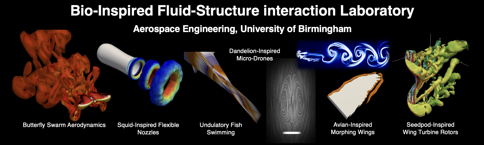
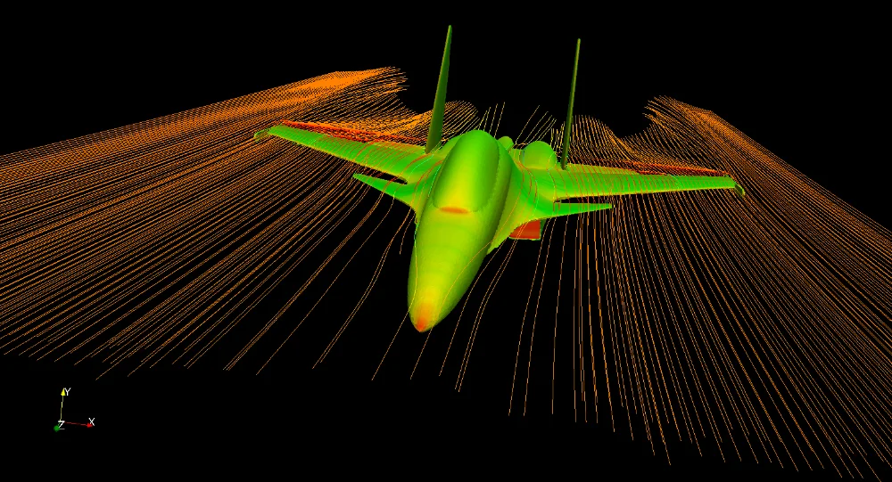
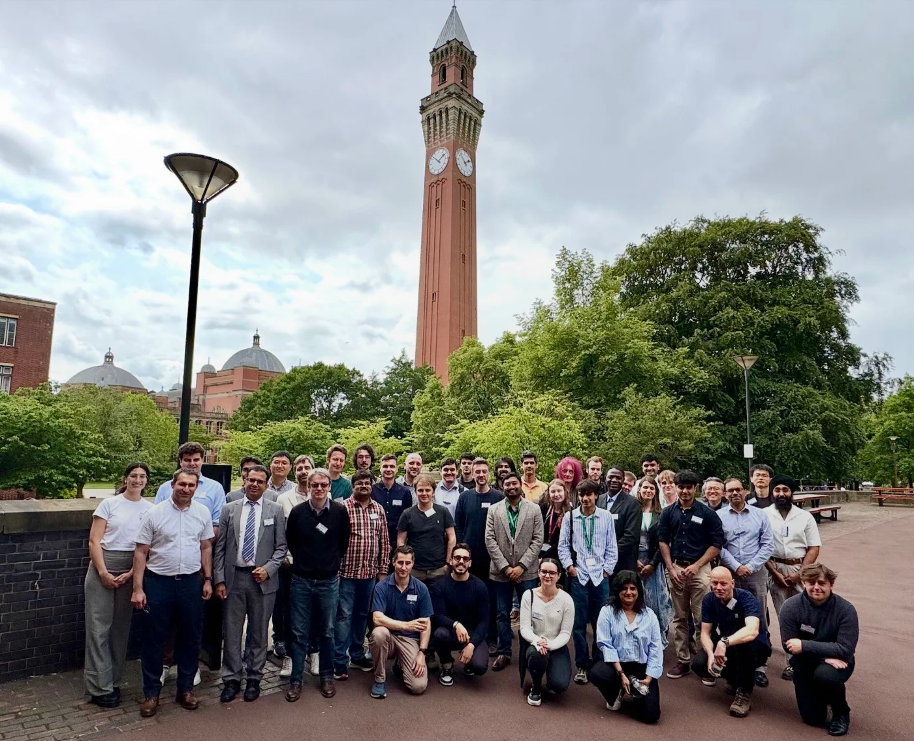
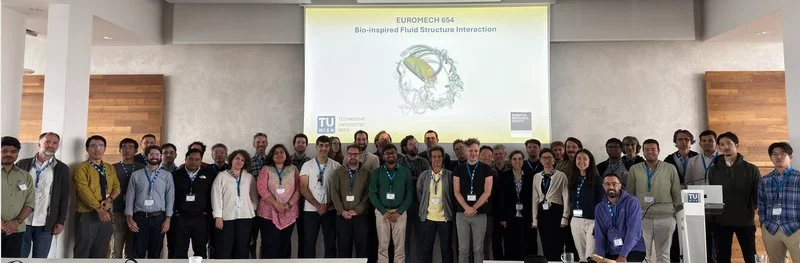
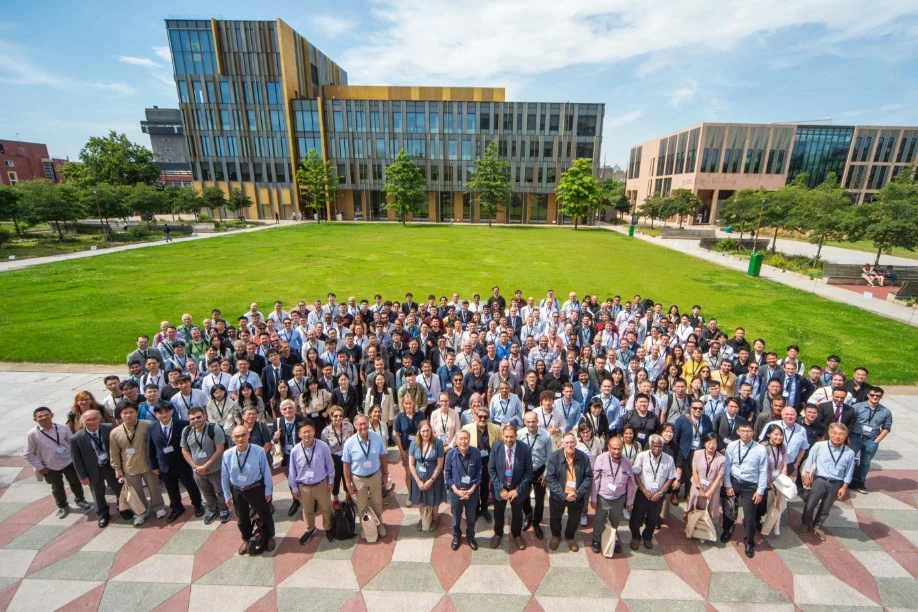

March 2026 – Present
EPSRC Peer Review College Member
EPSRC, UKRI · Birmingham, UK

Service to the research community and the University: editorial work, peer review of papers and grant proposals, organisation of conferences and symposia, leadership roles, invited talks and membership of professional and technical bodies. Training workshops are listed on the Teaching page.

Highlight · Open-source CFD education Open-Source CFD Education through FOSSEE As Principal Investigator of the FOSSEE OpenFOAM project at IIT Bombay, Dr Chandan Bose helps make computational fluid dynamics accessible through free, open-source tools: OpenFOAM tutorials and lecture videos, case studies, textbook companions, lab and research migration projects, and hackathons. He has guided 25+ interns in OpenFOAM, and led the FOSSEE OpenFOAM Symposium on CFD at IIT Bombay (8–9 January 2026), including an intermediate and advanced OpenFOAM workshop. 214 completed case studies66 completed research migration projects25+ interns guided in OpenFOAM Visit FOSSEE CFD →
Highlight · Regional research network Midlands Fluid Mechanics Group Dr Chandan Bose co-leads the Midlands Fluid Mechanics Group with Dr Paul Griffiths (Aston University) and Dr James Jewkes (University of Leicester), bringing together fluid mechanics academics across the Midlands to share insights and spark new collaborations. He served on the organising committee of the second Midlands Fluid Mechanics Meeting (MFMM 2024) at the University of Leicester (2 September 2024), led the local organisation of MFMM 2025 at the University of Birmingham, and sits on the meeting committee for MFMM 2026 at the University of Warwick. 9 member universities4 annual meetings since 20233 co-leads Visit the group website →
Highlight · International colloquium EuroMech Colloquium 654: Bio-inspired Fluid-Structure Interaction Dr Chandan Bose secured EuroMech funding for, and co-chaired with Prof. Manuel García-Villalba, EuroMech Colloquium 654 at TU Wien, Vienna (9–11 July 2025), with Prof. Marco de Tullio, Prof. Oscar Flores and Prof. Ramiro Godoy-Diana on the organising team. The colloquium brought together researchers in flapping flight, swimming, collective effects, flow control, energy harvesting and data-driven modelling to assess the state of the art in bio-inspired fluid-structure interaction and identify the key open questions for the field. 37 talks10 sessions3 days in Vienna Visit the colloquium website →
Highlight · International conference BBAA IX: 9th International Colloquium on Bluff Body Aerodynamics and Applications Dr Chandan Bose served on the Organising Committee of BBAA IX, hosted by the University of Birmingham (29 July – 2 August 2024), continuing a long-running series previously held in Kyoto, Melbourne, Virginia, Bochum, Ottawa, Milano, Shanghai and Boston. He co-chaired the Mini-Symposium on Fluid-Structure Interaction with Prof. Grigorios Dimitriadis and chaired the Energy Harvesting session with Prof. Grzegorz Litak. Selected papers appear in a special issue of the Journal of Wind Engineering and Industrial Aerodynamics. 253 oral presentations7 keynote lectures5 days in Birmingham Visit the conference website →March 2026 – Present
EPSRC, UKRI · Birmingham, UK
June 2025 – Present
Uni. of Birmingham · Birmingham, UK
September 2024 – Present
Uni. of Birmingham · Birmingham, UK
January 2024 – Present
Birmingham Environment for Academic Research (BEAR), Uni. of Birmingham · Birmingham, UK
January 2024 – Present
University of Birmingham · Birmingham, UK
September 2023 – Present
School of Met & Mat, University of Birmingham · Birmingham, UK
March 2022 – Present
FOSSEE Project, IIT Bombay · Bombay, India
January 2022 – July 2023
University of Edinburgh · Edinburgh, UK
| Period | Role |
|---|---|
| March 2025 – Present | Editorial Board Member in Scientific Reports, Springer-Nature. |
| May 2024 – Present | Editorial Board Member in Journal of Computational Sciences, Elsevier. |
| September 2024 – Present | Editor in OpenFOAM Journal (flagship journal of the OpenFOAM community). |
| Oct 2024 – Present | Guest Associate Editor in International Journal of Wind Engineering and Industrial Aerodynamics, Elsevier. |
| Jan 2024 – August 2024 | Guest Editor of Frontiers in Physics, Special Issue: Physics in Fluid-Structure-Sound Interactions and Control. |
| Year | Activity |
|---|---|
| 2025 – Present | Reviewed multiple EPSRC standard and new investigator award grant proposals. |
| 2026 | Served as a reviewer for the Software Sustainability Institute report. |
| 2025 | Served as a reviewer and panellist for STFC Research Software Maintenance Grant. |
| 2025 | Served as a reviewer and panellist for EPSRC Impact Acceleration Account Proposals. |
| Date | Role and event |
|---|---|
| June 2026 | Scientific committee member of the 8th International Symposium on Computational Wind Engineering to be held in Canada, organised by Western University (website). |
| January 2026 | OpenFOAM Symposium 2026, held in IIT Bombay, India (website). |
| December 2025 | Track Chair in the Heat And Mass Transfer Conference (IHMTC-2025), held in IIT Jodhpur, India (website). |
| December 2025 | Co-organiser of the special session on the Bio-Inspired Fluid-Structure Interaction in the International Conference on Theoretical Applied Computational and Experimental Mechanics (ICTACEM 2025), held in IIT Kharagpur, India (website). |
| July 2025 | Chair of the EuroMech Colloquium on Bio-Inspired Fluid-Structure Interaction, held in Vienna, Austria (website). |
| June 2025 | Chair of the 3rd Midlands Fluid Mechanics Meeting 2025, held at the University of Birmingham (website). |
| June 2025 | Organiser of the mini-symposium on Wave-Structure Interaction at the Marine2025 Conference, to be held Edinburgh, UK (website). |
| September 2024 | Organiser of the 1st Birmingham Fluids Day 2024, held at the University of Birmingham. |
| September 2024 | Co-organiser of the 2nd Midlands Fluid Mechanics Meeting 2024, held at the University of Leicester (website). |
| July 2024 | Co-organiser of the 9th Bluff-Body Aerodynamics and Applications 2024 conference, held at the University of Birmingham (website), successfully organising two mini-symposia on fluid-structure interaction and flow-induced energy harvesting. |
| June 2024 | Chair and organiser of the 1st UK-India OpenFOAM Symposium, held at IIT Kharagpur (300+ attendees). |
| July 2023 | Part of the organizing committee for the 18th OpenFOAM Workshop 2023, held at Genoa, Italy (website). |
| January 2023 – December 2023 | Co-organiser of the Intelligent and Bio-inspired Mechanics Seminar Series (online) (website). |
| July 2022 | Part of the organising committee for the 17th OpenFOAM Workshop 2022, held at the University of Cambridge, UK. |
| Date | Host |
|---|---|
| January 2026 | Department of Aerospace Engineering, MIT-ADT University, Pune, India. |
| December 2025 | Fluid Mechanics and Fluid Power Conference, Nirma University, India (Keynote Talk). |
| May 2025 | Faculty of Natural, Mathematical & Engineering Sciences, Department of Engineering, King’s College London, UK. |
| February 2025 | Laboratoire Physique et mécanique des milieux Hétérogènes (PMMH) - CNRS - ESPCI Université PSL/Sorbonne Université/Université de Paris, France. |
| December 2024 | Fluid Mechanics and Fluid Power Conference, Aligarh Muslim University, India (Keynote Talk). |
| November 2024 | BIRD lab at the University of California, Davis, USA (website). |
| November 2024 | Animal Flight Lab Seminar at the Integrative Biology department at University of California Berkeley, USA. |
| August 2024 | International Simulation Olympiad Paanduv Applications, India (Keynote Talk) (website). |
| July 2024 | Department of Aerospace Engineering, University of Bristol, UK. |
| December 2023 | Department of Mechanical Engineering, IIT Kharagpur, India. |
| November 2023 | University of Warwick Fluid Mechanics Seminar Series, UK. |
| May 2023 | University of Glasgow Aerospace Seminar Series, UK. |
| March 2023 | Intelligent and Bio-inspired Mechanics Seminar Series (online) (website). |
| February 2022 | Department of Mechanical Engineering, IIT Bombay, India. |
| February 2022 | Department of Mechanical Engineering, Shiv Nadar University, India. |
| July 2022 | Institute for Energy Systems Seminar Series, School of Engineering, University of Edinburgh, UK. |
| February 2021 | Fluids Meeting, Department of Aerospace and Mechanical Engineering, University of Liège, Belgium. |
| January 2021 | Indian National Academy of Engineering Webinar Series (Online). |
| October 2020 | Interdisciplinary Seminar on Biolocomotion, Universität Rostock, Germany and Aix-Marseille Université, France (Online). |
| August 2020 | Mechanics Lecture Series, The Mechanics Discussions Forum (Online). |
| January 2020 | Mechanical Engineering Department, Jadavpur University, Kolkata, India. |
| March 2019 | AMSA Lecture Series, Applied Mechanics Student Association, IIT Madras, Chennai, India. |
| September 2018 | Dept. of Mechanical Engineering, National Institute of Engineering, Mysuru, India. |
| February 2018 | Open Seminar Series, Dept. of Physics, IIT Madras, Chennai, India. |